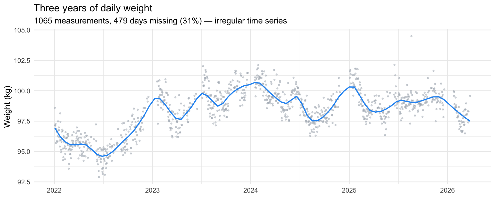
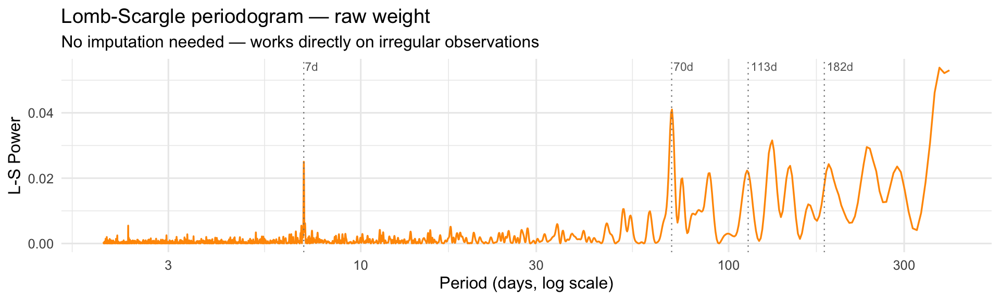
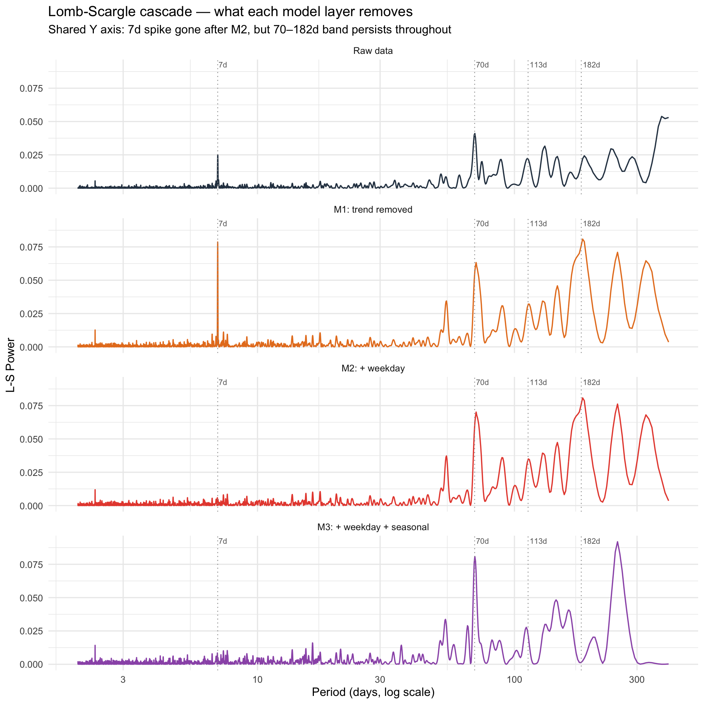

I’ve been weighing myself almost every morning with a Garmin scale since January 2022. Three years of data. The raw series looks noisy — but is it really just noise, or are there patterns at different timescales hiding inside it? So because of that “almost” I am dealing either irregularily spaced time series or time series with missing values, depending on how you look at it. This is a big no-no for standard time series analyses, that assume evenly spaced observations. Everything that follows uses methods that work directly on the irregular grid — no imputation, no gap-filling.
Show code
# Load pre-processed data — generate weight_data.csv locally from# the raw Garmin JSON using run_once.R (not committed to repo)weights <-read_csv("weight_data.csv", show_col_types =FALSE) |>mutate(t =as.numeric(date -min(date)),dow_num =as.numeric(wday(date, week_start =1)),month_num =as.numeric(month(date)) )# Full daily grid — only used for reference, not for modellingdf_full <-tibble(date =seq(min(weights$date), max(weights$date), by ="1 day")) |>left_join(weights, by ="date") |>mutate(t =as.numeric(date -min(date)),dow_num =as.numeric(wday(date, week_start =1)),month_num =as.numeric(month(date)) )n_obs <-nrow(weights)n_missing <-sum(is.na(df_full$weight_kg))
Show code
ggplot(weights, aes(date, weight_kg)) +geom_point(colour = COL_RAW, size =0.7, alpha =0.5) +geom_smooth(method ="loess", span =0.12,colour = COL_FIT, se =FALSE, linewidth =0.8) +labs(title ="Three years of daily weight",subtitle =sprintf("%d measurements, %d days missing (%.0f%%) — irregular time series", n_obs, n_missing, 100* n_missing / (n_obs + n_missing) ),x =NULL, y ="Weight (kg)" )

There’s clearly a lot going on: a long-term rise and fall, noticeable short-term wiggling and things in between. The question is how to decompose these cleanly.
Hunting for periods: Lomb-Scargle
Before fitting any model, it helps to know which timescales contain signal. The standard tool for this on an irregular grid is the Lomb-Scargle periodogram (Ruf, 1999). Unlike the FFT, it doesn’t require evenly spaced data — it fits sinusoids directly to whatever observations exist.
Show code
ls_raw <-lsp(weights$weight_kg, times = weights$t,type ="period", ofac =8, from =2, to =400, plot =FALSE)tibble(period = ls_raw$scanned, power = ls_raw$power) |>ggplot(aes(period, power)) +geom_line(colour = COL_LOMB, linewidth =0.6) +geom_vline(xintercept =c(7, 70, 113, 182),linetype ="dotted", colour ="grey50", linewidth =0.4) +annotate("text", x =c(7, 70, 113, 182), y =Inf,label =c("7d","70d","113d","182d"),vjust =1.4, hjust =-0.1, size =3, colour ="grey40") +scale_x_log10() +labs(title ="Lomb-Scargle periodogram — raw weight",subtitle ="No imputation needed — works directly on irregular observations",x ="Period (days, log scale)", y ="L-S Power")

Four things stand out: a sharp spike at 7 days, a broad messy humps between 70–182 days, and the spectrum rising again at long periods reflecting the overall trend. These are candidates, not conclusions — the periodogram tells us where energy is, not what it means.
Three progressive GAMs
GAMs handle missing data gracefully — they fit on observed rows only, no interpolation needed (Wood, 2017; Wood, 2011). The strategy is to build the model up one layer at a time and watch what each layer explains.
s(weekday) and s(month) use cyclic cubic splines (bs="cc") so that Sunday wraps back to Monday, and December wraps back to January. The knots argument sets the period correctly — boundary knots at 0.5/7.5 and 0.5/12.5 rather than at the data edges, which would collapse the endpoints.
The trend smooth uses k=10 — enough flexibility to track genuine multi-year drift, but stiff enough not to absorb the within-year seasonal pattern that s(month) should own.
Show code
knots_dow <-list(dow_num =c(0.5, 7.5))knots_month <-list(month_num =c(0.5, 12.5))m1 <-gam(weight_kg ~s(t, k =10),data = weights, method ="REML")m2 <-gam(weight_kg ~s(t, k =10) +s(dow_num, bs ="cc", k =7),data = weights, knots = knots_dow, method ="REML")m3 <-gam(weight_kg ~s(t, k =10) +s(dow_num, bs ="cc", k =7) +s(month_num, bs ="cc", k =12),data = weights, knots =c(knots_dow, knots_month), method ="REML")
Model comparison — each added layer earns its place
Name
AIC
AICc
BIC
R2
RMSE
m1
3081.0
3081.2
3135.4
0.683
1.017
m2
2999.5
2999.9
3070.9
0.707
0.976
m3
2745.0
2746.0
2857.5
0.771
0.859
Each layer earns its place. AIC drops ~90 points adding weekday, then another ~100 adding seasonal. BIC agrees — these terms aren’t overfitting, they’re explaining real structure. The final RMSE of ~0.85 kg is the irreducible day-to-day scatter: meal timing, hydration, measurement noise.
One modelling decision is worth unpacking. The trend smooth s(t) has a tuning parameter k that controls how flexible it is. Crank it up and the trend can wiggle at multi-month timescales — at which point it starts absorbing the seasonal pattern that s(month) is supposed to own. The two smooths compete for the same variance, and the flexible trend wins. Drop k back down and the seasonal smooth recovers, but you’ve lost some fit.
This tension is familiar in classical time series decomposition, but it usually resolves cleanly. In the famous textbook example airline passenger dataset seasons are sharp, regular, and large relative to the trend. There’s no ambiguity about what belongs where. Weight data is messier. The “seasonal” pattern here is real but modest (~3 kg peak-to-trough), and the trend itself drifts and curves in ways that overlap with multi-month timescales. In ecology you face the same problem: a population that crashes every winter looks periodic, but a population recovering from a disturbance looks like trend, and if both happen simultaneously the decomposition is a judgement call, not a fact.
The choice I made — k=10, roughly one degree of freedom per four months — keeps the trend smooth enough that s(month) gets to explain the repeating annual structure, while still tracking genuine multi-year drift. It’s a modelling choice, not a discovery. The data can’t tell you where the trend ends and the cycle begins.
The long-term trend rose about 5 kg from early 2022 to mid-2024, then came back down. Not a linear drift — more like a slow wave.
The weekly pattern is ±0.35 kg and the shape is clean: heaviest on Monday, declining through the week, lightest around Thursday, with a small rebound heading into the weekend. It maps almost perfectly onto the Lomb-Scargle 7-day spike — which turns out to be nothing more exotic than weekday eating habits. This pattern isn’t unique to me: Orsama et al. (2014) found the same Monday peak and Friday trough in 80 adults across four studies, and Turicchi et al. (2020) replicated it in over 1,400 participants across three European countries. The weekly rhythm in body weight appears to be a near-universal feature of modern life, not a biological clock.
The seasonal pattern is a ~3 kg swing from January (heaviest) to August–September (lightest), recovering towards December. Turicchi et al. (2020) observed similar seasonal fluctuations in a large European cohort, with patterns largely driven by holiday-period weight gain and summer reduction.
What the model didn’t explain: the Lomb-Scargle cascade
Now for the most interesting part. If the GAM captured the real periodic structure, its residuals should be white noise. Let’s check by running Lomb-Scargle on the residuals of each model — the same tool we started with, now used to audit what’s left over.
Show code
weights <- weights |>mutate(resid_m1 =residuals(m1),resid_m2 =residuals(m2),resid_m3 =residuals(m3) )ls_df <-function(x, t, label) { ls <-lsp(x, times = t, type ="period", ofac =8, from =2, to =400, plot =FALSE)tibble(period = ls$scanned, power = ls$power, model = label)}ls_all <-bind_rows(ls_df(weights$weight_kg, weights$t, "Raw data"),ls_df(weights$resid_m1, weights$t, "M1: trend removed"),ls_df(weights$resid_m2, weights$t, "M2: + weekday"),ls_df(weights$resid_m3, weights$t, "M3: + weekday + seasonal")) |>mutate(model =factor(model, levels =c("Raw data","M1: trend removed","M2: + weekday","M3: + weekday + seasonal")))model_colours <-c("Raw data"="#2c3e50","M1: trend removed"="#e67e22","M2: + weekday"="#e74c3c","M3: + weekday + seasonal"="#9b59b6")ref_lines <-tibble(period =c(7, 70, 113, 182),label =c("7d","70d","113d","182d"))ggplot(ls_all, aes(period, power, colour = model)) +geom_line(linewidth =0.6) +geom_vline(data = ref_lines, aes(xintercept = period),linetype ="dotted", colour ="grey60", linewidth =0.4,inherit.aes =FALSE) +geom_text(data = ref_lines, aes(x = period, y =Inf, label = label),inherit.aes =FALSE, vjust =1.4, hjust =-0.1,size =2.8, colour ="grey40") +scale_x_log10() +scale_colour_manual(values = model_colours) +facet_wrap(~model, ncol =1, scales ="fixed") +labs(title ="Lomb-Scargle cascade — what each model layer removes",subtitle ="Shared Y axis: 7d spike gone after M2, but 70–182d band persists throughout",x ="Period (days, log scale)", y ="L-S Power") +theme(legend.position ="none")

So few things pop up after comparing original periodogram to our model reisduals. Firstly our weekly smooth removes 7 day peak. Bazinga! Now the yearly smooth affects low frequency region. So definintely there is something there and yearly smooth at least partly explains it. But with 3.2 years of data I have very few long-period cycles, and the periodogram becomes unreliable at these frequencies. Whats stands out are 70 and 113 day peaks that remain largely “unseen” by mmodels. Wiht ~16 periods in dataset thats real signal. It will be interesting to pin them down!
A few directions from here:
Find the phase anchor for the 70 and 113d peaks The period is known; the question is what external variable marks the start of each cycle.
Low-frequency band (>150d): treat with caution. Peaks here are broad, the data is short, and the seasonal smooth interacts with this region in ways that are hard to disentangle. Wavelet analysis would show whether the energy is episodic or continuous — and whether the apparent period drifts over time.
Time-varying seasonal amplitude.s(month) assumes the annual pattern has the same shape every year. If the winter weight gain was larger in one year than another, that variation ends up in the residuals. A time-varying extension would let the seasonal amplitude float.
Component
Amplitude
Character
Weekly rhythm
±0.35 kg
Explained — weekday eating
Seasonal drift
~3 kg Jan→Sep
Explained — average annual cycle
Long-term trend
~5 kg over 3 yrs
Explained — slow drift
70 and 113d peaks
~0.3–0.5 kg
Unexplained — period known, phase missing
>150d band
unclear
Unreliable at this data length
References
Data papers
Orsama et al. (2014). Weight rhythms: Weight increases during weekends and decreases during weekdays. Obesity Facts, 7, 36–47. https://doi.org/10.1159/000356147